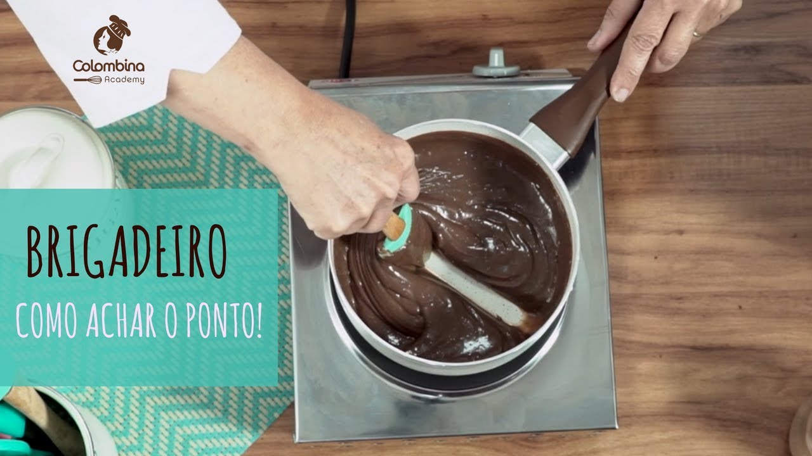

Receita de BrigadeiroEscolhi essa receita porque é fácil e eu gosto de comer pra por encima da pipoca ou comer enquanto assisto algo.
Algumas pessoas colocam um pouco de sal, não sei exatamente o por quê.
Fique atento para não queimar o brigadeiro. Caso ele comece a transbordar,
abaixe o fogo e espere ele voltar ao normal, em seguida ligue o fogo novamente.
Por o brigadeiro quente dentro da geladeira vai gerar um choque térmico que causará
bolhas de gordura ou o efeito dr cristalização no brigadeiro.
Vídeos aleatórios da internet e adaptei de acordo com o ponto de brigadeiro que eu gosto.